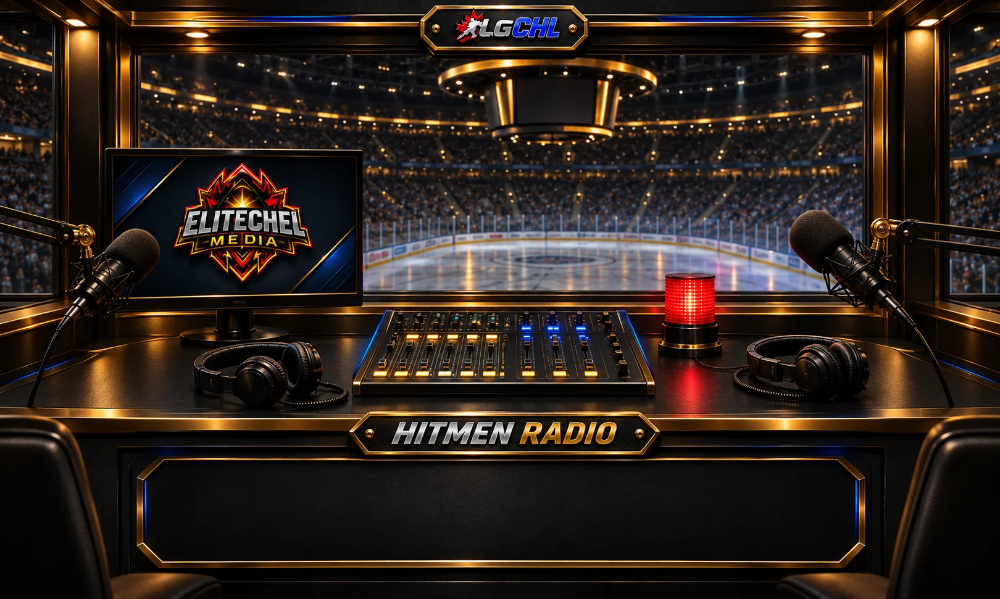

The Pressure Cooker
Some teams rise. Others break.
Checking playoff pressure…
LGCHL MEDIA · SEASON 55
Your complete Season 55 playoff desk. Scroll down for pressure rankings, rivalries, team journeys, stats and Memorial Cup coverage.
Loading playoff games…
ELITECHEL MEDIA · PLAYOFF FEATURES
Loading official bracket…
Some teams rise. Others break.
Checking playoff pressure…
The series ends. The rivalry lives.
Checking active series…
One goal. One journey. One champion.
Explore every team →LIVE POSTSEASON DATA
Playoff-only team results, skater leaders and goalie numbers. Season 55 regular-season totals stay in the archive.
Checking confirmed playoff finals…
Verified postseason points, goals and assists. Regular-season scoring is not substituted.
View playoff skaters →Postseason save percentage, games played and goals-against average from verified sources only.
View playoff goalies →THE ROAD TO THE MEMORIAL CUP
Which playoff teams have the strongest championship case? See the editorial contender index, verified results and any standings corrections still under review.

Follow contender rankings across the OHL, WHL and QMJHL. The ranking is an editorial analysis, not official championship odds.
Explore full Memorial Cup contender rankings →CHAMPIONSHIP COVERAGE
Follow WHL, OHL and QMJHL league champions into the Memorial Cup. The original bracket, series results and Predictor Challenge remain intact.
ELITECHEL MEDIA · HITMEN RADIO
Episode list unavailable right now. Listen to Episode 1 (audio).
The night around the LGCHL, called by Hitmen Radio.
Audio editionsEpisode 1 · 19 min 31 sec (MP3)Download
Revisit the Week 7 Power Index, teams on the rise, player leaders and regular-season recaps.